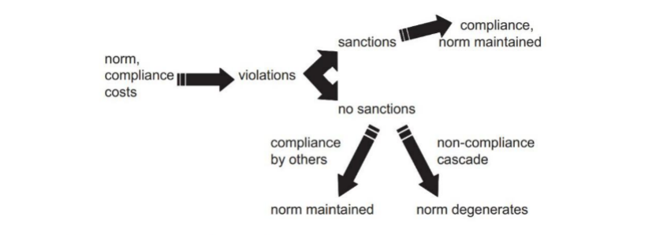

收录于合集

作品简介
【作者】 Diana Panke，德国弗莱堡大学教授，研究兴趣为国际规范、国际谈判与欧洲一体化；Ulrich Petersohn，利物浦大学高级讲师，研究兴趣为规范变迁与内战中私营安保公司的影响等。
【编译】 李源（国政学人编译员，南开大学周恩来政府管理学院）
【校对】 刘瑛琛
【审核】 杨稚珉
【排版】 高佳美
【美编 】黄竹音
【来源】 Panke, D., & Petersohn, U.(2012). Why international norms disappear sometimes. European Journal of International Relations, 18 (4), 719–742. https://doi.org/10.1177/1354066111407690
.
期刊简介
European Journal of International Relations,《欧洲国际关系杂志》（EJIR）是欧洲政治研究联盟国际关系常设小组（the Standing Group on International Relations of the European Consortium for Political Research, SGIR）的同行评审旗舰期刊, 由SGIR和欧洲国际研究协会组成的联合委员会共同管理。根据Journal Citation Reports显示，2019年该期刊的影响因子为3.474。
国际规范为何会退化
Why international norms disappear sometimes
文章导读
本文探讨的经验困惑是：为什么有些根深蒂固的国际规范会缓慢退化，而有些却是迅速退化，在极端情况下甚至可能会不复存在？为什么有些国际规范最终被替代，而有些规范却直接消失？既有文献主要关注了规范的兴起、扩散与社会化，但在国际规范退化的动态过程与范围条件上存在理论与经验上的空白。本文解释了规范退化的过程（缓慢退化、迅速退化）与结果（规范被替代、规范完全消失），并通过相关定性研究进行了检验。首先，规范退化的必要条件是存在挑战既有规范的行为体，同时缺乏有能力且有意愿维护既有规范的国际权威。此外，国际环境是否稳定与规范本身是否明确会影响规范退化的过程，是否存在其他替代性规范则会影响规范退化的结果。
01
经验困惑
规范退化在国际关系中普遍存在，但仍存在研究困惑。既有文献主要关注规范的兴起、扩散、社会化与规范对国家的影响，但对于规范的退化，他们要么闭口不谈，要么假定退化过程仅仅是新规范制度化过程中的另一面，即新规范的诞生取代了旧规范（例如，人权与废除奴隶制）。然而，后者并不能对规范退化作出很好解释，因为在有些情况下，旧规范并未被其他新规范替代，而是完全消失了。一国违反规范的行为如何以及在何种条件下会引发集体性的违规，并最终导致某一规范的废除？为何一些强规范会迅速退化，而非缓慢退化？为何有些规范被替代，而有些却直接消失了？本文寻求对规范退化的原因及其过程、结果作出解释。
02
对规范退化的解释
为了提出有关规范退化的动态过程（迅速还是缓慢）与结果（规范消失还是规范被替代）的假设，本文首先探讨了规范退化的必要条件，其次分析了影响规范退化的促进性变量(facilitating variables)与因果机制。
规范退化的必要条件是存在挑战既有规范的行为体，同时缺乏有能力且有意愿维护既有规范的国际权威。 在国际层面，国家经常会违反国际规范，尤其是试图降低遵守规范的成本。然而，正如图一所展示的，这并不会直接导致规范的废除。首先，其他国家或国际行为体可以通过集中或分散性的制裁，纠正违反规范的行为并重建对规范的遵守。其次，在没有行为体有意愿且有能力进行制裁的情况下，即使某一行为体违反了国际规范，但如果其他国家并未模仿其不遵守规范的行为而是继续遵守该规范，国际规范仍会维持下去。因此，在缺少制裁的情况下，只有当一国的违规行为引发了集体性的违规，违反规范就会成为一种常态而非例外，国际规范才会出现退化——完全消失或被其他规范替代。那么，关键问题在于：何种条件会推动某一国家的违反规范行为升级为集体性的不遵守？何时旧规范被替代，何时又完全消失？

图一：规范、违反与制裁
高度不稳定的环境会促进规范的迅速退化。 规范能够减低不确定性，稳定彼此间的预期。因此，在稳定的环境中，沉没成本与交易成本都很高。如果某一规范存在利用价值，那么不太可能出现许多国家寻求废除该规范的情况。因此，违反规范很有可能会被视为一种不合理的行为，并最终受到惩罚或制裁。在这种情况下，越轨者更可能寻求逐步限制该规范的适用范围，而不公开挑战其合法性。这种渐进的侵蚀策略会逐步降低遵守规范的物质或认知成本，使其适用范围日益受到限制，最终导致规范的退化。
而在不稳定的环境中，与规范相关的标准不断变动，技术革新不断对传统造成冲击，有关规范不断受到挑战。相比于稳定环境中渐进而缓慢地限制规范的适用范围，对现有规范不满的行为体更可能直接违反相关基本准则，从而导致规范的迅速退化。如果迅速而全面的情境变化证明了旧规范不再具有利用价值，那么多数行为体更可能会支持废除该规范而非投入资源以维护规范。因此，即使越轨者的直接挑战行为被认定为违反相关规范，它也不太可能受到惩罚或制裁。
第二个促进性变量是规范本身的特征。 明确的规范有着界定清晰的程序与适用范围，不存在未被界定的模糊概念或相互重叠的规则，很难容纳例外情况，越轨者的回旋空间较小。在存在行为体进行制裁的情况下，界定清晰的规范使得对违反规范行为的认定与制裁更加容易，从而会阻止出现集体性的违规行为。但一旦制裁缺位，尤其是在剧烈变化的环境中，这样的规范更容易解体，最终导致规范迅速退化。
而对于那些界定模糊的规范，越轨者可以通过违反规范的某些模糊方面或其部分适用范围，同时仍假装在整体上遵守该规范，降低遵守成本。规范的模糊性降低了因违反规范而受到惩罚的风险，越轨者享有较大的回旋空间，多使用迂回策略，最终导致规范缓慢而渐进地退化。
基于以上这些分析，作者提出两个有关规范退化的动态过程的假设：
假设1a： 如果规范本身高度明确、国际环境剧烈变化且不存在维护现有规范的行为体，国际规范更可能迅速被弱化。
假设1b： 如果规范本身界定模糊、国际环境并未剧烈变化且不存在维护现有规范的行为体，国际规范更可能缓慢地遭受侵蚀。
规范退化存在两种结果：完全消失、被其他规范部分或全部替代。对此，作者提出两个假设：
假设2a： 如果不存在替代性规范，被弱化的国际规范更可能完全消失。
假设2b： 如果存在替代性规范，被侵蚀的国际规范更可能部分或完全地被其他规范替代。
03
实践中的规范退化
为了检验以上这些假设，依据最相似体系设计，作者选取了三个案例：反无限制潜艇战规范、反雇佣军规范与反武力干涉内政规范。在这三个案例中，都不存在国际权威或强有力的行为体有意愿且有能力对违反规范的行为进行纠正。作者主要关注的是解释规范退化过程与结果的促进性变量，因而排除了那些国际规范一开始遭到了破坏，但在其消失前得到制止的案例。此外，为了简化退化过程的类型，作者只选取了促进性变量同方向的案例。
表一：案例选择
（一）迅速退化与未被替代：反无限制潜艇战规范
在1922年华盛顿会议与1930年伦敦海军会议上，主要海上强国（美英法意日）就限制潜艇作战达成明确共识。到1937年，该共识获得了包括苏德在内的30多个国家的支持。但与此同时，国际环境急剧变动，限制各国海军军备的条约逐渐土崩瓦解，对如何限制潜艇战的高度明确使得越轨者的回旋空间极小，各国的违规行为越来越多且没有得到相应的制裁，最终导致该规范在二战期间彻底终结。
（二）缓慢退化与未被替代：反雇佣军规范
自20世纪60年代，国际社会开始普遍接受反雇佣军规范。联合国大会与安理会曾多次谴责使用雇佣军的行为。同时，反雇佣军规范也深深融入国际法体系中。1978年的《日内瓦第三公约第一附加议定书》、1977年的《消除非洲雇佣军制度公约》与1989年的《反对招募、使用、资助和训练雇佣军国际公约》都涉及雇佣军问题。但该规范从未被清晰界定，在如何定义雇佣军等问题上模糊不清。规范的模糊性与外部环境的相对稳定赋予了越轨者较大的回旋空间，虽然没有一个国家公开挑战反雇佣军规范，但美英德等国都宣称雇佣的是“防御性”的私营安保公司而非雇佣军。加之缺乏相关替代性规范，因此导致该规范缓慢地受到侵蚀并完全消失。
（三）缓慢退化与被部分替代：反武力干涉内政规范
尽管反武力干涉内政规范被视为国际体系的基石，但自20世纪80年代，它一直处于缓慢退化的过程中。《联合国宪章》对不干涉原则本身界定得较为松散与模糊，许多条款存在较大争议。例如，宪章第51条对自卫权的说明、宪章第7章对安理会使用武力措施的规定等。这种模糊性与国际环境的相对稳定使得该规范更容易容纳例外情况，从而受到缓慢侵蚀。反武力干涉内政规范并未受到公开质疑，但与反雇佣军规范不同的是，该规范也并未完全消失。随着“人权高于主权”与“保护的责任”等原则的提出，该规范的范围逐步受到限制，某些部分被这些新的原则替代。
04
结论
本文基于环境是否稳定、规范本身是否明确与是否存在替代性规范三个因素，揭示了规范退化的动态过程与结果。环境的不稳定催生了行为体违反规范的动机，并使得对违规行为的制裁大打折扣，同时规范本身的高度明确使得最初的越轨者无法将自己的违规行为“伪装”为对既有规范的遵守，在环境剧烈变化的情况下，加剧规范退化的蔓延(degeneration cascade)，这最终导致规范迅速被废除。相反，在环境并未剧烈变化、规范本身界定模糊的情况下，规范更可能缓慢地退化。界定模糊的规范使得越轨者能够违反既有规范的某些方面，但仍在原则上遵守该规范，这减缓了其退化进程。此外，相对稳定的环境削弱了行为体违反规范的动机，提高了违规行为被认定的概率。同时，在存在替代性规范的情况下，两种规范退化过程都可能会导致规范最终被替代。相反，在不存在替代性规范的情况下，规范最后的结果更可能是被废除。以上这些理论主张都得到了经验证据的支持。
译者评述
为什么有些国际规范的退化过程较为迅速，而有些却比较缓慢。为什么有些国际规范最后的结果是被替代，而有些却最终消失？本文以规范本身作为因变量，指出国际环境的稳定性与规范本身的明确性两个变量会影响规范退化的过程，而是否存在替代性规范则主要影响规范退化的结果。作者以三种国际规范的不同退化过程与结果为案例，检验了本文的观点。
国际规范是主流建构主义理论的核心研究纲领，也是建构主义理论中极具实证主义精神的议程。1988年，芬尼莫尔(Martha Finnemore)和斯金克(Karthryn Sikkink)提出规范的“生命周期”：生成、扩散与内化。【1】在此基础上，国际规范的研究不断深入与拓展。国际组织对规范的主动“传授”、规范如何影响国家、国家接受国际规范的具体机制与影响变量、国家对国际规范的塑造过程等问题成为学者关注的重点。但规范的“生命周期”忽视了规范退化或去内化的可能性，是单向、线性的理论。有关规范退化的研究日益受到学者们的重视。2009年，加拿大学者麦基翁(Ryder Mckeown) 以小布什政府时期美国反酷刑规范的退化为案例，将规范退化的过程分为遭到挑战、挑战蔓延与规范消亡三个阶段，强调修正主义者以话语框定(framing)等策略挑战既有规范，从而导致既有规范的退化。【2】与麦基翁的单一案例研究不同，本文通过对比多个规范退化案例之间的差异，分析了影响规范退化过程与结果的多个变量，在研究设计上也更为严谨、更具实证精神。
本文拓宽了对国际规范（退化）的研究，也似乎给了我们一些启发。第一，新规范替代或消亡旧规范的过程与机制是什么？替代性规范与既有规范的竞争过程是怎样的，其结果是其中一方消失/被替代，还是相互补充？本文关于这一点的第二个假设似乎过于简单，有待于进一步的分析。第二，如何吸取不同理论范式的核心要素推进关于规范（退化）的研究？例如，麦基翁的研究就明显借鉴了后建构主义与后结构主义的研究成果，本文对强有力的行为体纠正违规行为的关注也反映了权力要素的重要性。第三，麦基翁与本文的研究都是以规范退化作为因变量，都是试图解释规范退化现象，那么是否可以把规范退化作为自变量进行研究？它研究的问题又可能是什么？
参考文献
[1]Finnemore, M., & Sikkink, K. (1998). International norm dynamics and political change. International organization, 52 (4), 887-917.
[2]McKeown, R. (2009). Norm regress: US revisionism and the slow death of the torture norm. International relations, 23 (1), 5-25.
文章观点不代表本平台观点，本平台评译分享的文章均出于专业学习之用, 不以任何盈利为目的，内容主要呈现对原文的介绍，原文内容请通过各高校购买的数据库自行下载。
**
**
**
**
**
**
添加 “国小政”微信
获取最新资讯


国政学人
支持学术公益与知识传播
微信扫一扫赞赏作者 __赞赏
已喜欢，对作者说句悄悄话
取消 __
发送给作者
发送
最多40字，当前共字
上一页 1/3 下一页
长按二维码向我转账
支持学术公益与知识传播
受苹果公司新规定影响，微信 iOS 版的赞赏功能被关闭，可通过二维码转账支持公众号。